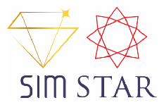
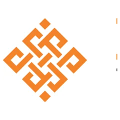
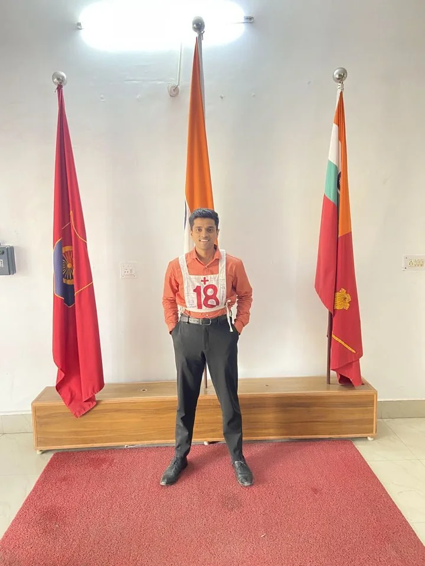
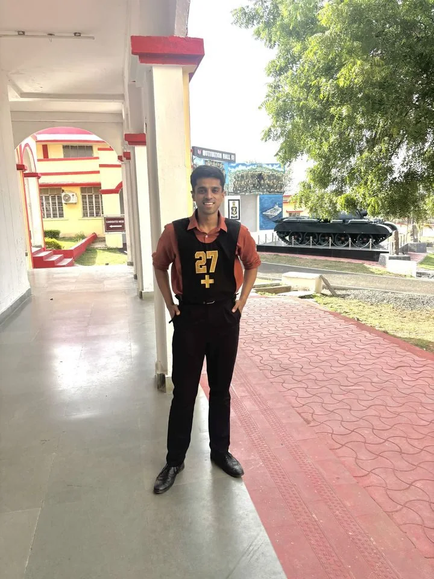

Q1QAD · Agentic AI
Procurement Champion
Autonomous purchasing agent that chases suppliers, reconciles confirmations and keeps PO data current inside the ERP.
~70% follow-ups automateddays → minutes1st live agent
I work on autonomous agents that act inside enterprise systems — and on the harder question of when software should be trusted to act without a person watching.

Seven years turning ambiguous problems into shipped, measurable outcomes — consumer growth at 20M+ users, a four-country enterprise platform, and now autonomous agents acting inside enterprise systems as Staff Product Manager, Applied AI at QAD Redzone.
Scaled a consumer vertical 0→1 to 20M+ monthly users with rigorous A/B testing, checkout CRO, and unit-economics thinking.
Shipped two production AI systems — a predictive ML pricing engine and an LLM + RAG assistant with human hand-off.
Built a nine-product, four-country enterprise platform from scratch — cutting manual effort by ~40%.
I'm open to senior product roles and interesting conversations.
A senior PM with ~7 years leading 0→1 growth, customer acquisition and AI-powered products across consumer (B2C) and enterprise (B2B) markets.
At Magicbricks (Times Internet) I built and scaled a consumer vertical from zero to 20M+ monthly users — owning the acquisition funnel (paid + organic), a rigorous A/B and multivariate testing programme, and a subscription business at over 80% renewal.
At QAD Redzone I own product direction for Champion AI, an agentic AI platform for supply chain — defining what autonomous agents do inside enterprise ERP workflows, and the trust model that decides when they may act on live customer data without a human in the loop. Before that, at SimStar (Stargems Group), I led a nine-product, four-country 0→1 enterprise platform, including two production AI systems — a predictive ML pricing engine and a generative-AI (LLM + RAG) assistant with human hand-off. I lead cross-functionally without authority, from engineering to C-suite.
Autonomous purchasing agent that chases suppliers, reconciles confirmations and keeps PO data current inside the ERP.
Template library, custom builder and LLM assistant that let customers configure their own agent workflows — no engineer required.
Detects at-risk and aircraft-on-ground orders in the order book and raises a single, order-level alert to the right owner.
Screens every order line against trade-control rules before shipment and routes exceptions to a human with the evidence attached.
The graduated-autonomy model governing when an agent acts alone, when a human approves, and what evidence every action must leave behind.
Runs the request-for-quote loop end to end — issuing RFQs, chasing responses and normalising quotes into a comparable set.
Sales, Inventory, Ops, Accounts & Compliance unified across 4 countries.
0→1 B2B + customer-facing site with full payments & live stock sync.
Predictive ML pricing on market + stone features, shadow-mode validated.
GenAI (LLM + RAG) inventory & support bot with human hand-off.
API-first media platform on GCP for diamond assets.
API integration auto-syncing inventory to external marketplaces.
Bid approval / rejection workflow with real-time WhatsApp alerts.
In-house algorithm matching stones across 4 locations.
Shareable per-diamond HTML record for buyers & partners.
Pre-registered, guardrailed A/B & multivariate testing at the price moment.
Tiered model launched lean — validated willingness-to-pay, then scaled.
Google SEM/PPC + SEO with message-match & Quality Score gains.
A chatbot that is wrong writes a bad sentence. An agent that is wrong emails a real supplier, or lets a controlled part leave a warehouse. That difference is the whole product problem — and it is not solved by a better model.
We were building autonomous agents that work a function end to end inside an enterprise ERP — reading the system of record, contacting suppliers, interpreting what comes back, and writing results back. Each agent had a clear brief. None of them answered the question that actually gated launch: when is this thing allowed to act without a human?
Every team was answering it implicitly, and differently. One agent waited for approval on everything, which made it a slower inbox. Another was ready to send on day one. Left alone, the weakest answer would have set the company's real risk posture, because customers do not evaluate agents individually — they form one judgement about whether your AI can be trusted near their data.
"Keep a human in the loop for everything." Safe, and it destroys the product. If a buyer must approve every follow-up, we have automated nothing — we have moved the work from their outbox to their approvals queue. The business case for the agent was the hours it gives back.
"Gate it on model confidence." Tempting, and misleading. Confidence tells you how sure the model is, not how expensive being wrong would be. A confident agent emailing the wrong supplier about the wrong order is precisely the failure you care about, and it will clear any threshold you set.
The useful reframe: autonomy is not a setting, it's a state an agent moves through. Treat it as something earned on observed behaviour rather than granted at configuration time, and the design follows.
Four stages. An agent cannot skip one, and it can be sent back at any point.
Two details carry most of the weight. Preview runs on live data, not a sandbox — sandbox data is clean, and clean data hides exactly the edge cases that cause incidents. And the supervised stage has a hard minimum run count with no override, including for administrators. An escape hatch that exists under deadline pressure is an escape hatch that gets used.
Reversibility over accuracy. An agent that is right 95% of the time and undoable beats one that is right 98% and final.
Evidence with every escalation. A human should review a decision, not redo the research. Escalation without context is just delay.
One shared model across agents. Slower to agree, but it means safety is argued once rather than per feature.
Speed to first unattended run. The staged path is materially slower. That cost is real, and I would pay it again.
Per-team flexibility. Teams lost the ability to set their own bar. Some of that friction was healthy; not all of it.
Elegance. Four stages plus audit plus rollback is more surface than a confidence threshold. It is also the part that survives contact with a customer.
Shipping an agent is not a modelling problem, it is a trust-transfer problem. You are asking someone to hand over a decision they are accountable for. People do that gradually, on evidence, and only when they can take it back.
So the product work is building the ladder, not tuning the model — and the measure of success is not how autonomous the agent is, but how comfortable the human is at each rung.
I've shipped production AI systems end-to-end — classical ML, LLM + RAG, and now autonomous agents acting inside enterprise ERP workflows — alongside a Master's in AI & ML at IIT Kanpur. My working rule: LLM + RAG where language matters, classical ML where numbers do, agents only where the action is reversible and audited — and evaluate all three with real metrics before they ship.
Autonomous agents that work a function end to end inside the ERP — procurement, sourcing, sales and trade compliance. They read the system of record, act in the outside world (supplier email, portals, screening), interpret what comes back, and write results back to the ERP. The hard part isn't generation, it's knowing when to stop and ask a human.
A regression model that prices diamonds from market signals and stone features (the 4Cs and more). I validated it in shadow mode — running it silently alongside human pricers — and only cut over once accuracy held.
A WhatsApp assistant that answers buyer queries from live inventory via RAG, with a confidence-gated hand-off to human experts. The AI generates language; the retrieved data stays the source of truth — which is what kills hallucination on six-figure deals.
A chatbot that is wrong writes a bad sentence. An agent that is wrong sends a real email to a real supplier, or lets a controlled part ship. So autonomy is earned in stages, never granted — this is the model I set, and every Champion is built against it.
Managed frontier models behind an enterprise boundary — customer data never leaves the trust perimeter.
What turns a model into an agent: structured calls into the ERP and outside systems, instead of text a human retypes.
One routing and governance layer across providers — central control of cost, limits and model choice.
Deciding where a person must sit in the loop — the core product decision in any agentic system.
Frontier model for the hard ~30% of queries where answer quality matters most.
Cheap, fast model for intent classification and the easy ~70% of lookups — ~15–20× cheaper per token.
Turns queries and inventory into vectors for semantic search.
Vector store for retrieval — reused existing Postgres, no new infra.
Retrieval-Augmented Generation — grounds answers in live data instead of the model's memory.
The pricing engine — the right tool when the target is a number, not language.
Used GPT-4o to score answers against a rubric at scale, instead of grading thousands by hand.
Routed by difficulty to cut LLM cost ~60–70% vs frontier-for-everything — optimising cost per resolved query.
Mean Absolute Percentage Error — on average, how far off each prediction is, as a percentage. A ~8–10% MAPE means the pricing model lands within ~90%+ of the true price. Lower is better.
Of everything the model flagged (e.g. escalated to a human), what share was correct. High precision = few false alarms.
Of everything the model should have flagged, what share it actually caught. I deliberately tuned for high recall on escalations — missing a case that needed a human is the trust-breaking failure.
The harmonic mean of precision and recall — a single number that rewards a model only when both are healthy, so you can't game one at the other's expense.
The real business outcome — the share of conversations the assistant resolves without a human. It rose while satisfaction also rose, which is the hard part.
Human-graded on a sample of real responses, cross-checked with LLM-as-judge. My go-live gate: ship only when correctness held ~90%+ and hand-off recall held ~95%+ on a golden test set.
The everyday product-management stack — roadmapping & delivery, design & collaboration, analytics, and CRM.


Plus what I use day-to-day: Odoo ERP, Whimsical, SQL & Metabase, and Google Cloud.

The same things that make me a strong PM — composure under pressure, leadership, and grit — were forged well outside the office: a defence officer selection, competitive football, and years of community service.
The Services Selection Board (SSB) is the five-day officer-selection process for the Indian Armed Forces. It's not a written test — it's a deep assessment of character across psychological tests, group tasks, outdoor command tasks (GTO), a grueling interview, and a conference, all scoring for 15 Officer-Like Qualities like decision-making under stress, effective intelligence, and the ability to influence a group.
It's one of the toughest selections in the country — a large share of candidates are screened out on day one, and only a small fraction are finally Recommended. To be recommended at all is rare; to top the merit list at All-India Rank 1 — and then be recommended again, and clear the Coast Guard board at AIR 3 — reflects consistent performance under exactly the kind of pressure product leadership demands.


I played competitive football for years — reaching national level in Class 10 and going on to play the Karnataka State Football Association (KSFA) leagues across Divisions A, B, C and D, plus private 11-a-side leagues like TAL and NBL.
Team sport at this level is where I first learned to lead, take a role, and perform under pressure — the habits I use in cross-functional product teams today.
I've volunteered with the Indian Red Cross Youth Wing, contributing to community service and awareness drives. During the pandemic I served as a COVID warrior, supporting on-ground relief and social-service efforts when it mattered most.
Got a product problem worth solving, or a role that fits? I reply within 24 hours.